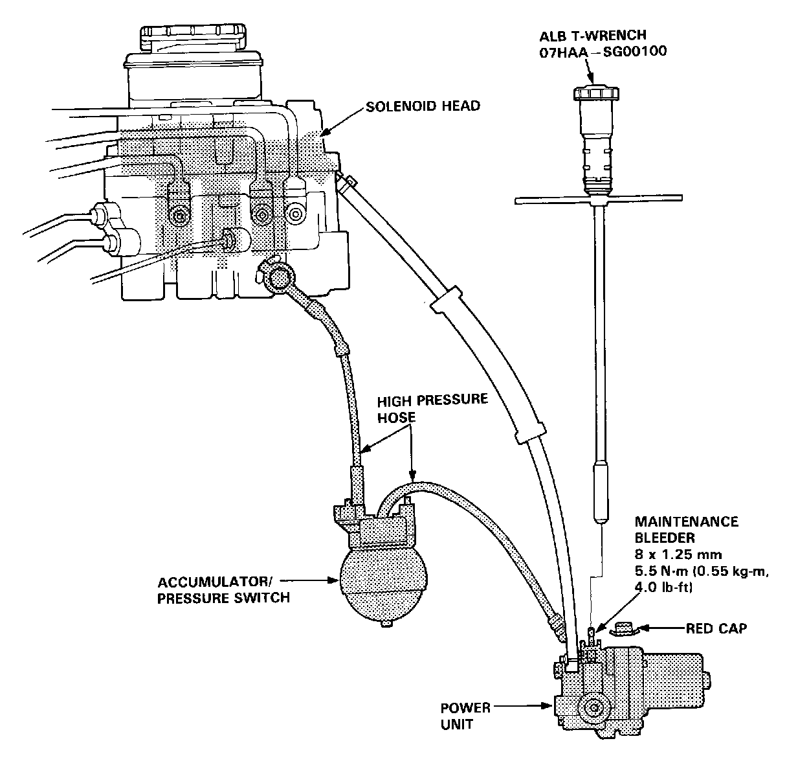

Relieving Accumulator/Line Pressure

- Relieving Accumulator/Line Pressure -
Use the ALB T-Wrench before disassembling the parts shadowed in the illustration.
1. Drain the brake fluid from the master cylinder and modulator reservoir thoroughly.
2. Remove the red cap from the bleeder on the top of the power unit.
3. Install the ALB T-Wrench on the bleeder screw and turn it out slowly 900 to collect high pressure fluid into reservoir. Turn the TWrench out one complete turn to drain the brake fluid thoroughly.
4. Retighten the bleeder screw and discard the fluid.
5. Reinstall the red cap.